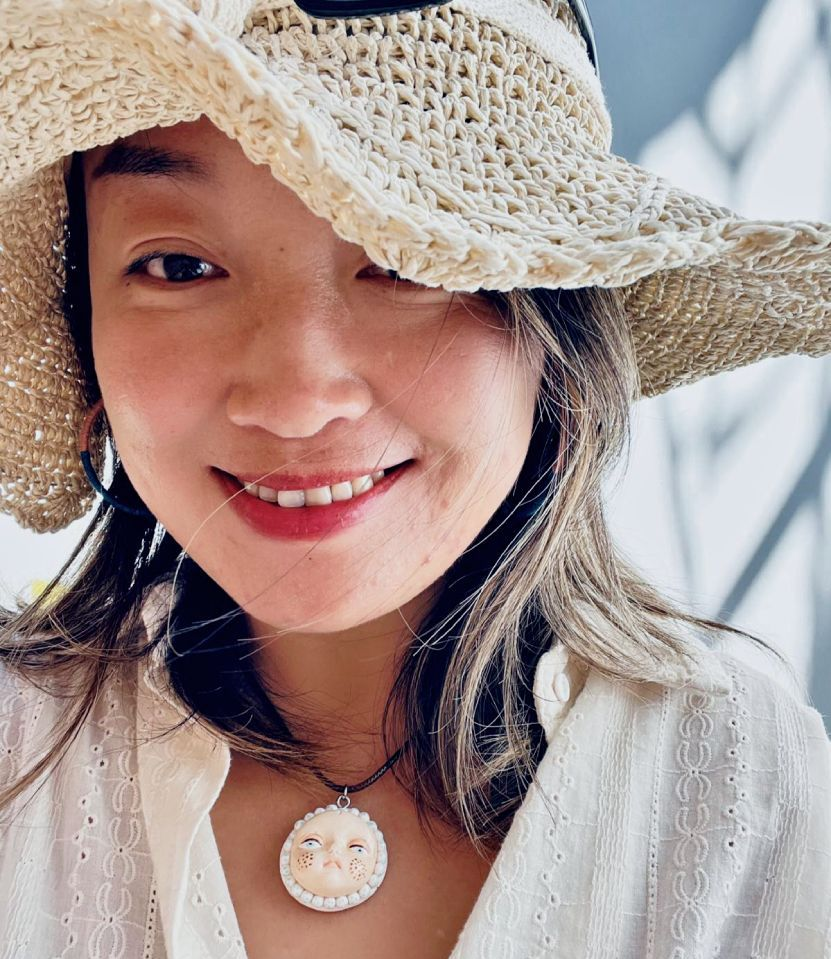
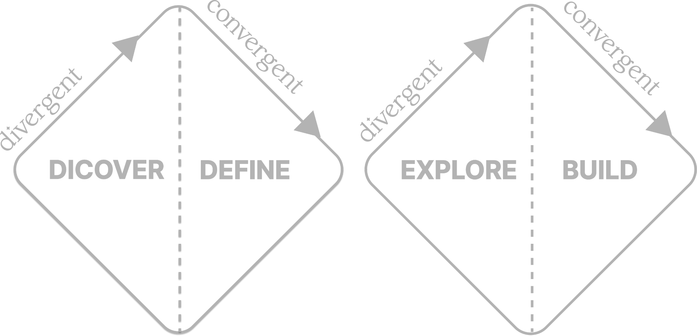
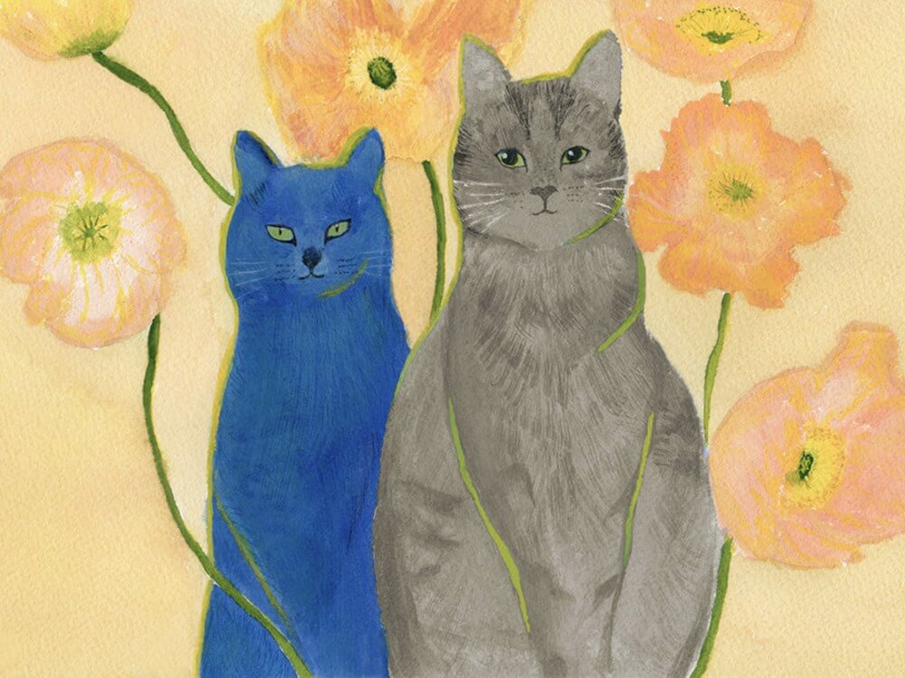

Hi, I’m Lulu, a user experience designer based in Sydney, working remotely with teams worldwide. I specialise in UX UI design, service and product strategy, and user research. In my latest project, I also explored front-end development by building an immersive website for an artist.
For every project, I start with the same questions: What is the goal of the design? Who is it for? What are their wants and needs? This helps to shape my design with intention and empathy.
My experience ranges from website & mobile app design, to user research & service journey mapping, with a strong empathise on systems thinking, and a particular interest in creating digital products and services that strike the balance of usability, functionality and good taste.
01
02
03
04
In this phase, I immerse myself in understanding the goals and audience through research, interviews, and insights gathering.
Here, ideas take shape. I explore creative directions, prototypes, and visuals that translate insight into meaningful design.
This is where everything comes together — refining, producing, and delivering outcomes that connect people and inspire change.

Working with Lulu was a highly enjoyable experience, as she was often checking in and offering suggestions on ways to improve the site and find the right style to suit my business image.
- Justin Jet Zorbas
Taken on my first trip to Cyprus — I can still remember that forever-blue sky & turquoise water.

My first commissioned artwork — a painting of a friend’s two lovely cats.
From my visit to Jiuzhaigou Valley in Sichuan, China — the landscape was simply mesmerising.
Get in touch to see how we can collaborate on your project
Contact Me